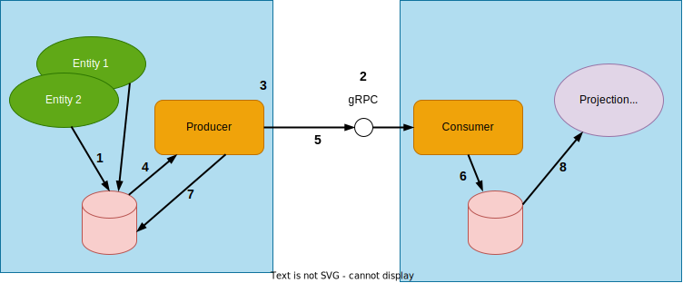

Akka Projection gRPC with producer push
Normally for Akka Projection gRPC the consumer connects to the producers and requests them to stream relevant journal events back.
In some use cases it is not possible for the consumer to connect to the producers, for example because of firewalls or NAT in front of each producer. The consumer may also not know about all producers up front. Akka Projection gRPC producer push solves this by letting the producers initiate the connection to the consumer and then push events that the consumer is interested in.
This module is currently marked as May Change in the sense that the API might be changed based on feedback from initial usage. However, the module is ready for usage in production and we will not break serialization format of messages or stored data.
Overview

- Entities stores their events journal in the producer journal.
- The consumer service accepts gRPC connections from producers.
- The producer establishes a replication stream to the consumer.
- Events are read from the journal.
- Event is emitted to the replication stream.
- The consumer writes incoming events directly to its configured journal.
- The producer keeps track of offset for the stream.
- On the consumer, separate projections can run over the local journal with events from all producers.
Dependencies
Producer push is provided by the Akka Projection gRPC module, refer to the dependency info in the Akka Projection gRPC page.
Consumer set up
Setting up the consumer starts with creating an EventProducerPushDestinationEventProducerPushDestination defining what stream id it will accept. The stream id is a public identifier of entity types between producers and consumers, a producer pushing events for unknown stream ids will be denied.
The destination is then used as a parameter to EventProducerPushDestinationEventProducerPushDestination to get a gRPC service handler that can be bound as an Akka HTTP/gRPC endpoint:
- Scala
-
source
val destination = // FIXME why not just StringValue.scalaDescriptor for scala API? EventProducerPushDestination(streamId, StringValue.javaDescriptor.getFile :: Nil) val bound = Http(system) .newServerAt("127.0.0.1", grpcPort) .bind(EventProducerPushDestination.grpcServiceHandler(destination)) - Java
-
source
EventProducerPushDestination destination = EventProducerPushDestination.create("stream-id", protoDescriptors, system); CompletionStage<ServerBinding> bound = Http.get(system) .newServerAt("127.0.0.1", 8080) .bind(EventProducerPushDestination.grpcServiceHandler(destination, system)); bound.thenAccept(binding -> LOGGER.info("Consumer listening at: {}:{}", binding.localAddress().getHostString(), binding.localAddress().getPort()));
The Protobuf descriptor parameter needs to contain descriptors for all Protobuf messages that the producer will publish, unless not using Protobuf as wire format, in that case an empty list can be passed to the EventProducerPushDestination. For more details about using Protobuf as wire format see Serialization.
Filtering
The consumer can define filters for what events it wants the producers to send. Filtered events will still have an entry in the consumer journal but without any payload sent from the producer or stored in the consumer.
Filters are set for the destination using withConsumerFilterswithConsumerFilters
- Scala
-
source
val destination = EventProducerPushDestination(streamId, protoDescriptors) .withConsumerFilters(Vector(ConsumerFilter.IncludeTopics(Set("myhome/groundfloor/+/temperature")))) - Java
-
source
EventProducerPushDestination destination = EventProducerPushDestination.create("stream-id", protoDescriptors, system) .withConsumerFilters( Collections.singletonList(new ConsumerFilter.IncludeTopics(Collections.singleton("myhome/groundfloor/+/temperature"))) );
For a full overview of the available types of filters see the filter section of the Akka Projection gRPC page.
Note that producer push does not currently provide the capability to dynamically change the filters once a destination is started. This may be implemented as a future improvement.
Transformation
The events and some of their metadata can be transformed before being stored in the consumer, withTransformationwithTransformation defines a single transformation to use for all producers, while EventProducerPushDestinationEventProducerPushDestination is invoked with an origin id for the producer and additional metadata specified when setting up the producer and can provide transformations based on those.
Use Transformation.identityTransformation.identity() to pass through each event as is.
The payload transformation also allows for arbitrary filtering logic, returning a NoneOptional.empty() marks the event as filtered and avoids storing the payload in the consumer journal.
- Scala
-
source
val destination = EventProducerPushDestination(streamId, protoDescriptors) .withTransformationForOrigin { (originId, metadata) => EventProducerPushDestination.Transformation.empty .registerPersistenceIdMapper { envelope => val pid = envelope.persistenceId pid.replace("originalPrefix", "newPrefix") } .registerTagMapper[SomeProtobufEvent](envelope => envelope.tags + s"origin-$originId") } - Java
-
source
EventProducerPushDestination destination = EventProducerPushDestination.create("stream-id", protoDescriptors, system) .withTransformationForOrigin((String originId, Metadata metadata) -> Transformation.empty() .registerPersistenceIdMapper(system, envelope -> envelope.persistenceId().replace("originalPrefix", "newPrefix")) .registerTagMapper(String.class, envelope -> { Set<String> newTags = new HashSet<>(); newTags.addAll(envelope.getTags()); newTags.add("origin-" + originId); return newTags; }));
Intercepting connections
Connections from producers can be intercepted by adding an interceptor via withInterceptorwithInterceptor. This can be used together with the additional producer metadata to add authentication, as an alternative to or in addition to mTLS.
Producer set up
The producer is essentially a special projection handler for a projection running on the producer. It could be a single actor system running one projection handling all slices, or it could be Sharded Daemon Process pushing events for partitioned slices of the entities.
The producer is created through EventProducerPushEventProducerPush, which has a method handler() which returns a handler to be plugged into an atLeastOnceFlow projection. The first parameter, the originId is how the producer identifies itself to the consumer.
FIXME better producer setup sample than this
- Scala
-
source
val eventProducer = EventProducerPush[String]( originId = producerOriginId, eventProducerSource = EventProducerSource[String]( entityType, streamId, // wire protocol is protobuf StringValue messages rather than Akka serialization format for String EventProducer.Transformation.empty.registerMapper[String, StringValue](s => Some(StringValue(s))), EventProducerSettings(system), // no veggies allowed producerFilter = envelope => !veggies(envelope.event)), connectionMetadata = authMetadata, GrpcClientSettings.connectToServiceAt("localhost", grpcPort).withTls(false)) ProjectionBehavior( R2dbcProjection.atLeastOnceFlow[Offset, EventEnvelope[String]]( producerProjectionId, settings = None, sourceProvider = EventSourcedProvider.eventsBySlices[String]( system, R2dbcReadJournal.Identifier, eventProducer.eventProducerSource.entityType, 0, 1023), handler = eventProducer.handler())) - Java
-
source
EventProducerPush<String> eventProducer = EventProducerPush.create( "producer-id", new EventProducerSource("entityTypeKeyName", "stream-id", Transformation.empty(), EventProducerSettings.create(system)), GrpcClientSettings.connectToServiceAt("localhost", 8080, system).withTls(false)); SourceProvider<Offset, EventEnvelope<String>> eventSourcedProvider = EventSourcedProvider.eventsBySlices( system, R2dbcReadJournal.Identifier(), eventProducer.eventProducerSource().entityType(), 0, 1023); Behavior<ProjectionBehavior.Command> projectionBehavior = ProjectionBehavior.create( R2dbcProjection.atLeastOnceFlow( ProjectionId.of("producer", "0-1023"), Optional.empty(), eventSourcedProvider, eventProducer.handler(system), system));
Filters
The producer can also define filters, an event filtered by the producer is never passed over to the consumer, regardless of configured consumer filters. The filters are defined using withProducerFilter or withTopicProducerFilter on EventProducerSourceEventProducer.EventProducerSource.
Additional connection metadata
It is possible to define additional connection metadata that is passed to the consumer on connection when constructing the EventProducerPushEventProducerPush. This can be used for authenticating a producer in the consumer interceptor, or providing additional details to use when transforming events in the consumer.
Serialization
If just passed the internal event instances of an application the producer will use Akka Serialization to serialize each event for pushing them the consumer, this is convenient but tightly couples the producer and consumer so that they must be upgraded in lock step, even though they are two separate systems.
To avoid problems and keeping the lifecycles of the producer and consumer systems separate it is better to use an explicit protobuf message protocol for the events pushed. With Protobuf it is possible evolve of protocol messages without breaking compatibility (the ability for the consumer to read the messages produced with older and newer versions of the producer). Note that even with Protobuf it will still require care to not change the published events in incompatible ways.
You will likely not want to define the original Event Sourced Entity events as protobuf messages but rather as regular JavaScala classes, like you’d normally do, but, you can still use protobuf messages as a wire format.
In the producer this is done by transforming each type of event to an outgoing protobuf messages with the EventProducer.Transformation passed to the EventProducerSource on construction.
On the consuming side it might be ok to store and use the protobuf messages as they are, but it is also possible to transform them from the wire protocol protobuf messages back to some application domain specific representation before storing in the journal by defining a EventProducerPushDestination.Transformation and specifying for the EventProducerPushDestination on construction using withTransformation or withTransformationForOrigin.